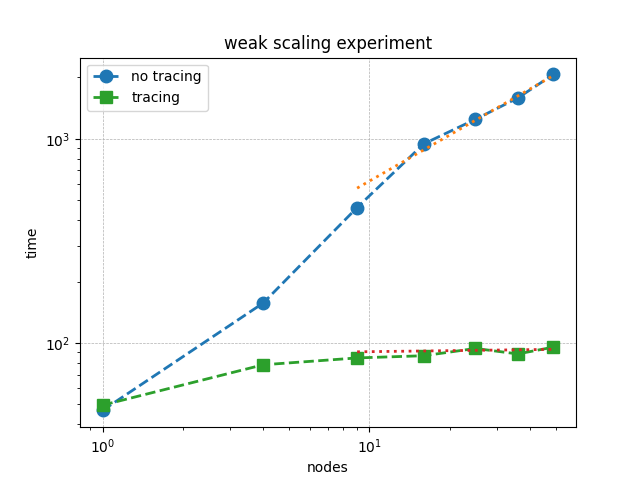

Performance Effect of Tracing¶
The performance affect of using tracing cannot be overstated.
This is a weak scaling plot of Red-Black Gauss-Seidel iteration for Poisson’s Equation in 2D. The blue circles are the weak scaling results without tracing and green squares are with tracing. Already at fifty nodes there is a 20X performance difference. The solution time without tracing scales as \(\left(\texttt{nodes}\right)^{0.7}\). So this difference will only get worse.
Implementing Tracing in Your Code¶
Here is the iteration loop without tracing.
using namespace flecsi;
std::size_t sub{3};
std::size_t ita{0};
do {
for(std::size_t i{0}; i < sub; ++i) {
execute<task::red>(m, ud(m), fd(m));
execute<task::black>(m, ud(m), fd(m));
}
ita += sub;
execute<task::discrete_operator>(m, ud(m), Aud(m));
auto residual = reduce<task::diff, exec::fold::sum>(m, fd(m), Aud(m));
execute<task::print_residual>(residual, ita+sub);
} while(ita < max_iterations.value());
Note
Residual tolerance termination conditions are usually employed for solvers, but FleCSI does not yet support futures in this way.
Note
These loops contain flecsi::execute<> task launches. Any such loops in your code need to have tracing enabled either on the loop itself or on a containing loop.
using namespace flecsi;
std::size_t sub{3};
std::size_t ita{0};
static exec::trace t; // trace object
t.skip(); // skip tracing first time through loop
do {
auto g = t.make_guard(); // turn tracing on for enclosing do loop
for(std::size_t i{0}; i < sub; ++i) {
execute<task::red>(m, ud(m), fd(m));
execute<task::black>(m, ud(m), fd(m));
}
ita += sub;
execute<task::discrete_operator>(m, ud(m), Aud(m));
auto residual = reduce<task::diff, exec::fold::sum>(m, fd(m), Aud(m));
execute<task::print_residual>(residual, ita+sub);
} while(ita < max_iterations.value());
Note
The first time through this loop, task::red follows initialization tasks. This can setup a different ghost copy pattern than all other iterations. Tracing works by replaying memoized dependency analysis computations. The t.skip() command tells FleCSI to defer tracing until the second iteration of the do loop.
Enabling Trace Replay on the Command Line¶
Tracing memoization must also be enabled on the command line.
$ srun ... poisson ... --backend-args="... -dm:memoize"
When to Use Tracing¶
You should enable tracing anytime you have a set of tasks that will be flecsi::execute<>’ed in the same sequence over and over again.